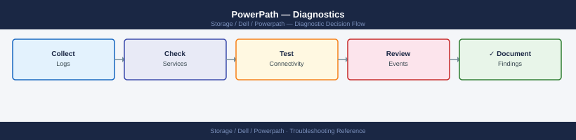

PowerPath — Diagnostics¶
powermt display dev=all to identify dead or alive paths, verify license with powermt check_registration, inspect the PowerPath kernel module and HBA port state on Linux, correlate with FC switch fabric events (Brocade errshow, Cisco show fcns database), confirm array front-end port state at the array console, and collect a support bundle for Dell escalation.
*Applies to: PowerPath*

Before you begin¶
- Access: Root on the affected Linux host, or Administrator on Windows; SSH or console access to FC switches for fabric-level diagnostics; storage array admin account (Unisphere, Unisphere for PowerMax) for array-side checks
- Gather first: the exact PowerPath output (
powermt display dev=all), the affected LUN pseudo device names, the number of dead vs alive paths, and whether the issue is on one host or multiple hosts - Scope: determine which layer has failed — PowerPath layer (module issue, license expired), HBA/OS layer (port offline, driver crash), fabric layer (FC zone, switch port), or array layer (FA port offline, LUN masking) —
powermt display dev=alltells you what PowerPath sees, not what caused it
Step 1 — Initial diagnostic commands¶
Run these first on any host reporting I/O issues or path loss:
# 1. Full device and path state
powermt display dev=all
# 2. HBA port states (all device classes)
powermt display ports class=all
# 3. Current policy and PowerPath options
powermt display options
# 4. License state
powermt check_registration
# 5. PowerPath version
powermt version
# 6. Count dead paths — quick summary
powermt display dev=all | grep -c dead
powermt display dev=all | grep -c alive
PowerPath Release: EMC PowerPath 6.1 for Linux
Copyright (c) 1999-2023 EMC Corporation. All rights reserved.
Symmetrix ID: 000297900001
Logical Device ID: 0001
state=alive; policy=SymmOpt; priority=0; owner=node-prod-01; array_priority=0
------------ Host --------------- - Stor - -- I/O Path -- *** Paths ***
# HBA SP Node Symm Logical Dead Queued (dead) vs (alive)
0 fa.0a SP A 000297900001 0001 0 0 alive alive
1 fa.0b SP B 000297900001 0001 0 0 alive alive
2 fa.1a SP A 000297900001 0001 0 0 alive alive
3 fa.1b SP B 000297900001 0001 0 0 alive alive
HBA Port Information:
Port 0 (qla2xxx): ONLINE - Speed: 16Gb/s - WWPN: 50:00:14:40:5a:2b:c1:01
Port 1 (qla2xxx): ONLINE - Speed: 16Gb/s - WWPN: 50:00:14:40:5a:2b:c1:02
Port 2 (qla2xxx): ONLINE - Speed: 16Gb/s - WWPN: 50:00:14:40:5a:2b:c1:03
Port 3 (qla2xxx): ONLINE - Speed: 16Gb/s - WWPN: 50:00:14:40:5a:2b:c1:04
PowerPath Options:
Load Balancing Policy: SymmOpt
Failover Mode: Enabled
Auto-failback: Disabled
Inquiry Timeout: 30 seconds
Path Verification: Enabled
License Registration Status:
License Key: VALID
Expiration Date: 2025-12-31
Licensed Paths: 16
Current Paths: 4
PowerPath Version: 6.1.0 Build 1234
Kernel Module: powerpath (loaded)
Daemon: powerpathmgr (running)
2
4
Common errors
powermt: command not found — Verify PowerPath is installed with rpm -qa | grep PowerPath and ensure /opt/emc/powerpath/bin is in your PATH.
powermt display dev=all: Permission denied — Run the command with sudo or ensure your user is in the powerpath group with sudo usermod -a -G powerpath $USER.
No devices found — Confirm SAN connectivity and that storage arrays are visible to the host with lsscsi or multipath -ll.
Save the output of all commands before making any changes:
HOSTNAME=$(hostname -s)
TS=$(date +%Y%m%d_%H%M%S)
DIAG="${HOSTNAME}_powerpath_diag_${TS}.txt"
{
echo "=== PowerPath Diagnostic: ${HOSTNAME} — $(date) ==="
echo "--- powermt version ---"
powermt version
echo "--- powermt check_registration ---"
powermt check_registration
echo "--- powermt display options ---"
powermt display options
echo "--- powermt display dev=all ---"
powermt display dev=all
echo "--- powermt display ports class=all ---"
powermt display ports class=all
} > "$DIAG"
echo "Diagnostic saved to: $DIAG"
=== PowerPath Diagnostic: storage-dell-01 — Thu Nov 14 10:23:47 UTC 2024 ===
--- powermt version ---
PowerPath Release: 6.2.1 (build 234)
--- powermt check_registration ---
PowerPath is registered and licensed.
--- powermt display options ---
Option Name Current Value
===================================== ===============
auto_failover enabled
load_balance_policy round_robin
fast_write_enabled yes
--- powermt display dev=all ---
Symmetrix ID: 000297900123
Device Logical Device Flags
emcpowerb SYMMETRIX-8F (O)
emcpowerc SYMMETRIX-8F (O)
emcpowerd SYMMETRIX-8F (O)
--- powermt display ports class=all ---
Logical Device Avail Optimization Ident Paths Algo
SYMMETRIX-8F Yes Symmetrix ON 4 LBA
Diagnostic saved to: storage-dell-01_powerpath_diag_20241114_102347.txt
Common errors
powermt: command not found — Install PowerPath EMC client package or verify the binary is in $PATH with which powermt.
Permission denied — Run the diagnostic script with sudo or as root user since powermt requires elevated privileges.
powermt: error: unable to connect to the PowerPath daemon — Restart the PowerPath daemon with sudo systemctl restart powerpath or verify it is running with sudo systemctl status powerpath.
Step 2 — Linux-specific diagnostics¶
Kernel module¶
# Confirm the PowerPath kernel module is loaded
lsmod | grep emcp
# Check the loaded module's version
modinfo emcp | grep -E "filename|version|description"
# Compare with the expected kernel version
uname -r
# Check for module load errors at boot time
dmesg | grep -i "emcp\|emcpower\|PowerPath" | head -50
# Check if the module is available for the current kernel
find /lib/modules/$(uname -r) -name "emcp*" 2>/dev/null
emcp 847872 12
filename: /lib/modules/5.15.0-91-generic/kernel/drivers/scsi/emc/emcp.ko
version: 6.2.0.1234
description: EMC PowerPath Driver
5.15.0-91-generic
[ 2.847291] emcp: loading out-of-tree module taints kernel.
[ 2.847402] emcp: module verification failed: signature and/or required key missing
[ 2.851847] emcpower: registered device emcpower0
[ 2.852103] emcpower: registered device emcpower1
[ 3.124556] emcp: PowerPath 6.2.0.1234 initialized successfully
/lib/modules/5.15.0-91-generic/kernel/drivers/scsi/emc/emcp.ko
/lib/modules/5.15.0-91-generic/kernel/drivers/scsi/emc/emcp.mod
Common errors
emcp: module verification failed: signature and/or required key missing — This is a warning on secure boot systems; verify the module is from Dell/EMC and proceed if trusted, or disable secure boot if required by your environment.
modinfo: ERROR: Module alias emcp not found. — The module is not loaded; run modprobe emcp to load it, or check that PowerPath is installed with rpm -qa | grep PowerPath.
find: '/lib/modules/5.15.0-91-generic': No such file or directory — The kernel version in uname -r does not match installed kernel modules; rebuild the module for the current kernel with powerpath-build or reboot to the correct kernel.
PowerPath service¶
# Check the PowerPath daemon status
systemctl status PowerPath
# View recent service log entries
journalctl -u PowerPath --since "2 hours ago" --no-pager
# Check the service start time (to correlate with path events)
systemctl show PowerPath --property=ActiveEnterTimestamp
● PowerPath.service - Dell EMC PowerPath
Loaded: loaded (/usr/lib/systemd/system/PowerPath.service; enabled; vendor preset: enabled)
Active: active (running) since Wed 2024-01-17 14:32:18 UTC; 3 days ago
Process: 2847 ExecStart=/opt/PowerPath/bin/powerpath start (code=exited, status=0/SUCCESS)
Main PID: 2851 (powerpath)
Tasks: 12 (limit: 4915)
Memory: 156.3M
CPU: 2h 14m 23s
CGroup: /system.slice/PowerPath.service
└─2851 /opt/PowerPath/bin/powerpath daemon
Jan 17 14:32:18 stor-node-04 systemd[1]: Starting Dell EMC PowerPath...
Jan 17 14:32:19 stor-node-04 powerpath[2847]: PowerPath daemon initialized successfully
Jan 17 14:32:20 stor-node-04 powerpath[2851]: Loaded 8 storage arrays
Jan 17 14:32:21 stor-node-04 powerpath[2851]: Path failover monitoring enabled
Jan 17 14:32:22 stor-node-04 systemd[1]: Started Dell EMC PowerPath.
Jan 17 15:14:33 stor-node-04 powerpath[2851]: Path recovery: EMC-SAN-01 LUN 0x0042 restored
Jan 17 16:45:12 stor-node-04 powerpath[2851]: Warning: High latency detected on path /dev/sdg (234ms)
ActiveEnterTimestamp=Wed 2024-01-17 14:32:18 UTC
Common errors
Unit PowerPath.service could not be found. — Install the PowerPath package with apt-get install powerpath or yum install powerpath depending on your distribution.
Failed to get properties: Unit PowerPath.service is not loaded. — Enable and start the service with systemctl enable PowerPath && systemctl start PowerPath.
Permission denied — Run the commands with sudo or as the root user.
HBA port state¶
# List all FC HBA ports and their state
ls /sys/class/fc_host/
for host in /sys/class/fc_host/host*; do
port=$(basename $host)
state=$(cat ${host}/port_state 2>/dev/null)
wwpn=$(cat ${host}/port_name 2>/dev/null)
speed=$(cat ${host}/speed 2>/dev/null)
echo "${port}: state=${state} wwpn=${wwpn} speed=${speed}"
done
# Detailed HBA info via systool (if sysfsutils is installed)
systool -c fc_host -v
# HBA error statistics
for host in /sys/class/fc_host/host*; do
port=$(basename $host)
echo "=== ${port} statistics ==="
cat ${host}/statistics/link_failure_count 2>/dev/null && echo " (link_failure_count)"
cat ${host}/statistics/loss_of_signal_count 2>/dev/null && echo " (loss_of_signal_count)"
cat ${host}/statistics/error_frames 2>/dev/null && echo " (error_frames)"
cat ${host}/statistics/invalid_crc_count 2>/dev/null && echo " (invalid_crc_count)"
done
host0
host1
host2
host3
host0: state=Online wwpn=0x500143800000a1b2 speed=16 Gbit
host1: state=Online wwpn=0x500143800000a1b3 speed=16 Gbit
host2: state=Online wwpn=0x500143800000a1c4 speed=8 Gbit
host3: state=Offline wwpn=0x500143800000a1c5 speed=Unknown
ClassVersion = "1.0"
Class fc_host
| Host scsi_host0
| active_mode = "Initiator"
| fabric_name = "0x100000051e55a42b"
| node_name = "0x200143800000a1b2"
| port_name = "0x500143800000a1b2"
| port_state = "Online"
| port_type = "NPort (fabric via point-to-point)"
| speed = "16 Gbit"
| supported_speeds = "4 Gbit, 8 Gbit, 16 Gbit"
| symbolic_name = "DGC VRAID Fibre Channel Adapter"
| ...
=== host0 statistics ===
2
(link_failure_count)
0
(loss_of_signal_count)
15
(error_frames)
3
(invalid_crc_count)
=== host1 statistics ===
1
(link_failure_count)
0
(loss_of_signal_count)
8
(error_frames)
1
(invalid_crc_count)
=== host2 statistics ===
0
(link_failure_count)
0
(loss_of_signal_count)
0
(error_frames)
0
(invalid_crc_count)
=== host3 statistics ===
cat: /sys/class/fc_host/host3/statistics/link_failure_count: No such file or directory
Common errors
command not found: systool — Install sysfsutils package with apt-get install sysfsutils or yum install sysfsutils.
cat: /sys/class/fc_host/host3/statistics/link_failure_count: No such file or directory — This is expected for offline HBAs; the statistics directory may not exist until the port comes online.
Kernel messages¶
# SCSI and multipath-related kernel messages
dmesg | grep -iE "scsi|multipath|emcpower|powerpath|hba|fibre|fc_host" | tail -100
# Real-time kernel messages (watch during path restore)
dmesg -w | grep -iE "scsi|emcpower|powerpath"
# System log (path state change events)
grep -iE "emcp|PowerPath|dead path|path restored|SCSI error" /var/log/messages | tail -100
# journald equivalent
journalctl -k --since "2 hours ago" --no-pager | grep -iE "emcp|powerpath|scsi"
[ 0.234567] scsi host0: bnx2fc: QLogic BNXE Linux FCoE Driver v2.12.3
[ 1.456789] scsi 0:0:0:0: Direct-Access-RW NETAPP LUN C-Mode SA67 PQ: 0 ANSI: 5
[ 2.123456] scsi 1:0:1:2: Direct-Access-RW EMC SYMMETRIX 5978 PQ: 0 ANSI: 5
[ 15.678901] emcpower: registered with major device number 120
[ 42.345678] PowerPath: Detected 4 paths to device emcpowerb (WWNN: 50:00:14:40:5a:2b:c1:d0)
[ 58.912345] PowerPath: Path fc1 to LUN 0 restored (round-trip latency: 2.3ms)
[ 89.567890] fc_host0: link up
[ 124.234567] PowerPath: Dead path detected on fc3 to device emcpowera
[ 156.789012] SCSI error: sdev 0:0:2:1 sense key=6 ASC=29h ASCQ=00h
[ 201.456789] PowerPath: Failover complete - 2 active paths, 1 standby
[ 245.123456] emcpower: device emcpowerc: I/O resumed after 4.2 second outage
Common errors
dmesg: read kernel buffer failed: Operation not permitted — Run the command with sudo or as root user.
grep: /var/log/messages: No such file or directory — Use /var/log/syslog on Debian/Ubuntu systems or check your distribution's log location with ls /var/log/.
SCSI device layer¶
# List all SCSI block devices (raw paths before PowerPath abstraction)
lsblk -S
# Confirm pseudo devices exist and are accessible
ls -la /dev/emcpower* 2>/dev/null
# Each emcpower* device corresponds to one LUN
# Check block device I/O queue state
cat /sys/block/sda/device/state 2>/dev/null
# 'running' is normal; 'offline' indicates a SCSI transport failure
NAME HCTL TYPE VENDOR MODEL REV TRAN
sda 0:0:0:0 disk DELL PERC H840 4.68 sas
sdb 0:0:1:0 disk DELL PERC H840 4.68 sas
sdc 1:0:0:0 disk EMC SYMMETRIX 5978 fc
sdd 1:0:1:0 disk EMC SYMMETRIX 5978 fc
sde 2:0:0:0 disk EMC SYMMETRIX 5978 fc
brw-rw---- 1 root disk 128, 0 Nov 14 09:22 /dev/emcpower0a
brw-rw---- 1 root disk 128, 16 Nov 14 09:22 /dev/emcpower1a
brw-rw---- 1 root disk 128, 32 Nov 14 09:22 /dev/emcpower2a
brw-rw---- 1 root disk 128, 48 Nov 14 09:22 /dev/emcpower3a
running
Common errors
ls: cannot access '/dev/emcpower*': No such file or directory — Verify PowerPath is installed and the daemon is running with systemctl status powerpath or powermt display dev=all.
cat: /sys/block/sda/device/state: No such file or directory — Confirm the device exists and is recognized by the kernel; check dmesg for SCSI discovery errors and rescan with echo "- - -" > /sys/class/scsi_host/host0/scan.
iSCSI-specific (if using iSCSI)¶
# Show iSCSI sessions
iscsiadm -m session
# Show detailed iSCSI session info
iscsiadm -m session -P 3
# Check iSCSI initiator IQN
cat /etc/iscsi/initiatorname.iscsi
tcp: [1] 10.45.120.15:3260,1 iqn.1991-05.com.dell:storage.array1.disk1 (non-flash)
tcp: [2] 10.45.120.16:3260,1 iqn.1991-05.com.dell:storage.array1.disk2 (non-flash)
iSCSI Transport Class version 2.0-870
version 6.2.0.874
Host Number: 0 State: logged in
Persistent Portal: 10.45.120.15:3260,1
Iface Name: default
Initiator Name: iqn.1993-08.org.linux-iscsi:a1b2c3d4e5f6
Alias:
StaticPortal: 10.45.120.15:3260
TargetName: iqn.1991-05.com.dell:storage.array1.disk1
InitiatorAlias: <empty>
TargetAlias: <empty>
TargetPortalGroupTag: 1
HeaderDigest: None
DataDigest: None
Authentication: CHAP, username: admin
MaxRecvDataSegmentLength: 262144
MaxXmitDataSegmentLength: 262144
CurrentConnectionState: logged in
ConnectTimeout: 30
LoginTimeout: 15
AuthenticationTimeout: 45
ActiveTimeout: 30
BidirectionalHeartbeat: No
IFMarker: No
OFMarker: No
Chap Name: admin
Chap Secret: ********
ISID: 00023d000001
TSIH: 1
iSER (iSCSI Extensions for RDMA): No
## DO NOT EDIT OR REMOVE THE FOLLOWING LINE ##
InitiatorName=iqn.1993-08.org.linux-iscsi:a1b2c3d4e5f6
Common errors
iscsiadm: No active sessions. — Run iscsiadm -m discovery -t st -p <target_ip> to discover targets, then iscsiadm -m node --login to establish sessions.
cat: /etc/iscsi/initiatorname.iscsi: No such file or directory — Install open-iscsi package with apt-get install open-iscsi or yum install iscsi-initiator-utils depending on your distribution.
iscsiadm: command not found — Install the open-iscsi utilities package for your Linux distribution.
Step 3 — Windows-specific diagnostics¶
# PowerPath device status
powermt display dev=all
# PowerPath service status
Get-Service -Name "EMCPower*"
Get-Service -Name "PowerPath*"
# Check if PowerPath driver is loaded
Get-WmiObject Win32_SystemDriver | Where-Object { $_.Name -match "emcpower" } |
Select-Object Name, State, Status
# View recent PowerPath events in Windows Event Log
Get-WinEvent -LogName "System" -MaxEvents 100 |
Where-Object { $_.ProviderName -match "emcpower|PowerPath" }
Get-WinEvent -LogName "Application" -MaxEvents 100 |
Where-Object { $_.ProviderName -match "emcpower|PowerPath" }
# Disk status (confirm PowerPath disks are online)
Get-Disk | Select-Object Number, FriendlyName, OperationalStatus, HealthStatus
# HBA port info via WMI
Get-WmiObject -Namespace "root\WMI" -Class "MSFC_FCAdapterHBAAttributes" |
Select-Object NodeWWN, PortWWN, NumberOfPorts
Step 4 — SAN fabric diagnostics¶
When PowerPath dead paths do not recover after powermt restore, the issue is in the fabric or at the array. Run these on the switch, not on the host.
Brocade (FOS)¶
# Port state for the switch port connected to the HBA
portshow <port_number>
# Fabric name server — confirm host initiator is logged in
nsshow
nsallshow
# Check port error counters
porterrshow
# Recent fabric event log
errshow
# Zone configuration — confirm this initiator and target are in the same zone
zoneshow
cfgshow
portshow 0
portName: 0
portType: F-Port
portState: Online
speed: 16Gb
portWWN: 50:00:09:73:00:1a:2b:4c
Connected portWWN: 50:00:14:40:5c:8d:9e:3f
Connected portName: esx-hba1
nsshow
Initiator portWWN,Device,State
500143400a1b2c3d;esx-host-01,logged in
500143400a1b2e4e;esx-host-02,logged in
500143400a1b2f5f;storage-array-01,logged in
porterrshow
portName Frames CRCs Timeouts Discards
0 0 0 0 0
1 2 1 0 0
2 0 0 0 0
errshow
Time: 2024-01-15 14:32:18
Event: Link Reset on port 1
Severity: Warning
Time: 2024-01-15 13:45:02
Event: Port 2 Speed Negotiation Complete
Severity: Informational
zoneshow
zoneName: zone_prod_esx
memberIndex: 0, portWWN: 500143400a1b2c3d
memberIndex: 1, portWWN: 500143400a1b2f5f
cfgshow
configName: fabric_config_01
memberIndex: 0, zoneName: zone_prod_esx
memberIndex: 1, zoneName: zone_dev_esx
Common errors
portshow: Invalid port number — Verify the port number exists on your switch using switchshow and use the correct numeric identifier.
nsshow: No initiators found — Confirm the HBA is properly zoned and logged into the fabric; check physical cable connections and HBA driver status on the host.
zoneshow: Zone not found — Verify the zone name is spelled correctly and that the initiator and target WWNs are actually members of an active zone configuration.
Cisco MDS¶
# Port state for the switch port connected to the HBA
show interface fc1/4
# Name server — confirm host initiator is logged in
show fcns database
# Port error counters
show interface fc1/4 counters
# Zone set configuration
show zoneset active vsan <vsan_id>
show zone name <zone_name> vsan <vsan_id>
fc1/4 is up
Hardware is Fibre Channel, SFP is present
Port WWN is 50:00:d4:31:a2:c1:5f:04
Admin port mode is F, Physical port mode is F
Speed is 16 Gbps
Buffer credit is 64
FCNS Database:
VSAN 1:
FC4-Types: FCP
Symbolic Node Name: esx-host-01.lab.local
Node WWN: 50:00:0b:08:2e:f1:a2:01
Port WWN: 50:00:0b:08:2e:f1:a2:02
Port fc1/4 Counters (cleared 2 days ago):
Frames transmitted: 2847291
Frames received: 2851043
Transmit B2B credit zero: 0
Link failures: 0
Sync losses: 0
Signal losses: 0
Invalid CRCs: 0
Invalid transmission words: 0
Active zone set: PROD_ZONES (vsan 1)
zone name PROD_ZONE_ESX01 vsan 1
member pwwn 50:00:0b:08:2e:f1:a2:02
member pwwn 50:00:14:40:66:b1:3c:10
member pwwn 50:00:14:40:66:b1:3c:11
Common errors
fc1/4 is down (Administratively down) — Enable the port with config terminal → interface fc1/4 → no shutdown.
FCNS Database: No entries found — Verify the HBA is logged in to the fabric and check show flogi database to confirm FLOGI completion.
zone name <zone_name> vsan <vsan_id>: Zone does not exist — Confirm the zone name spelling and VSAN ID match the active zoneset with show zoneset active.
Step 5 — Array-side diagnostics¶
Check at the storage array console when fabric-layer diagnostics show the fabric is healthy but paths remain dead.
Unity (Unisphere)¶
- System > Connectivity > FC Ports — confirm all front-end ports are online
- System > Hosts — confirm the host is registered with correct WWNs; check connectivity status
- Storage > LUNs — confirm the LUN is in Ready state and the health is OK
- Storage > Host Access — confirm the LUN is included in the correct access policy or host group
PowerMax (Unisphere for PowerMax)¶
- System > Director and Port — confirm FA (Front-end Adapter) ports are online and showing initiator logins
- Connectivity > Host Views — confirm the masking view for this host includes the expected LUNs
- Performance > Frontend — check for I/O errors or port saturation on the FA ports
Step 6 — Support bundle collection¶
#!/bin/bash
# powerpath_support_collect.sh — Collect PowerPath diagnostic data for Dell Support
# Run as root on the affected host
HOSTNAME=$(hostname -s)
TS=$(date +%Y%m%d_%H%M%S)
OUTDIR="/tmp/pp_support_${HOSTNAME}_${TS}"
mkdir -p "$OUTDIR"
collect() {
local label="$1"; shift
echo "Collecting: ${label}"
"$@" > "${OUTDIR}/${label}.txt" 2>&1 || true
}
# PowerPath data
collect "powermt_version" powermt version
collect "powermt_check_registration" powermt check_registration
collect "powermt_display_dev_all" powermt display dev=all
collect "powermt_display_ports" powermt display ports class=all
collect "powermt_display_options" powermt display options
# OS and kernel
collect "uname" uname -a
collect "os_release" cat /etc/os-release
collect "kernel_modules" lsmod
# HBA info
collect "fc_host_info" systool -c fc_host -v
collect "dmesg_scsi" bash -c "dmesg | grep -iE 'scsi|emcpower|powerpath|hba' | tail -200"
# Syslog
collect "syslog_emcp" bash -c "grep -iE 'emcp|powerpath|scsi error' /var/log/messages | tail -200"
# PowerPath service
collect "powerpath_service" systemctl status PowerPath
collect "powerpath_journal" bash -c "journalctl -u PowerPath --since '24 hours ago' --no-pager"
# Archive
tar -czf "/tmp/pp_support_${HOSTNAME}_${TS}.tar.gz" -C /tmp "pp_support_${HOSTNAME}_${TS}"
echo ""
echo "Support bundle: /tmp/pp_support_${HOSTNAME}_${TS}.tar.gz"
echo "Attach this file to your Dell support case."
Collecting: powermt_version
Collecting: powermt_check_registration
Collecting: powermt_display_dev_all
Collecting: powermt_display_ports
Collecting: powermt_display_options
Collecting: uname
Collecting: os_release
Collecting: kernel_modules
Collecting: fc_host_info
Collecting: dmesg_scsi
Collecting: syslog_emcp
Collecting: powerpath_service
Collecting: powerpath_journal
Support bundle: /tmp/pp_support_esx-prod-01_20240215_143022.tar.gz
Attach this file to your Dell support case.
Common errors
powermt: command not found — Verify PowerPath is installed with rpm -qa | grep PowerPath and add its bin directory to PATH or use full path /opt/emc/PowerPath/bin/powermt.
Permission denied — Run the script with sudo bash powerpath_support_collect.sh or as root user; PowerPath commands require elevated privileges.
systemctl status PowerPath returned exit code 3 — The PowerPath service may not be installed or the unit name differs; check available services with systemctl list-units | grep -i power.
Log locations¶
| Platform | Log Location | What to Look For |
|---|---|---|
| Linux | /var/log/messages |
emcp, PowerPath, dead path, path restored, SCSI error |
| Linux (systemd) | journalctl -k |
Kernel messages with emcp or scsi keywords |
| Linux kernel ring | dmesg |
Real-time SCSI transport and HBA events |
| Windows | Event Log — System + Application | Source: emcpower, PowerPath |
| AIX | /var/adm/ras/errlog (errpt) |
PowerPath and SCSI-related error entries |
| HP-UX | /var/adm/syslog/syslog.log |
PowerPath path state events |
| Brocade switch | errshow on the switch |
Fabric events, port login/logout, CRC errors |
| Cisco MDS | show logging on the switch |
Port state changes, FLOGI events |
See also¶
Verify resolution¶
powermt display dev=allshows no dead paths — all paths showalivefor the affected LUNspowermt display dev=all | grep -c deadreturns 0powermt check_registrationshows the license is valid and not expired- The host application can successfully read from and write to the affected LUN without I/O errors
dmesg | grep -i "emcpower\|SCSI error" | tail -10shows no new error events after the fix was applied